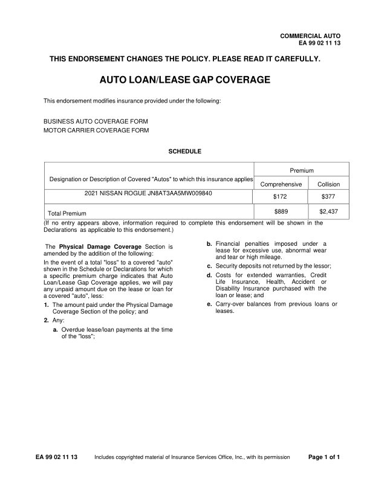
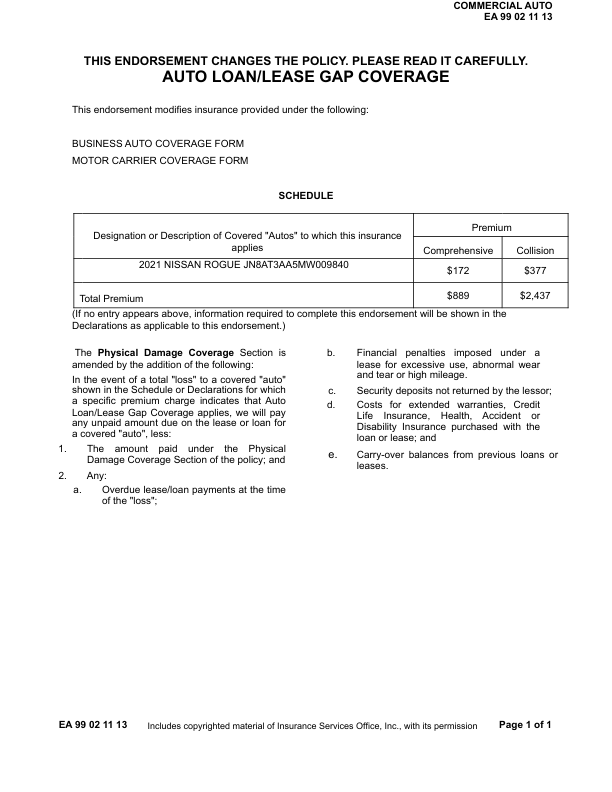
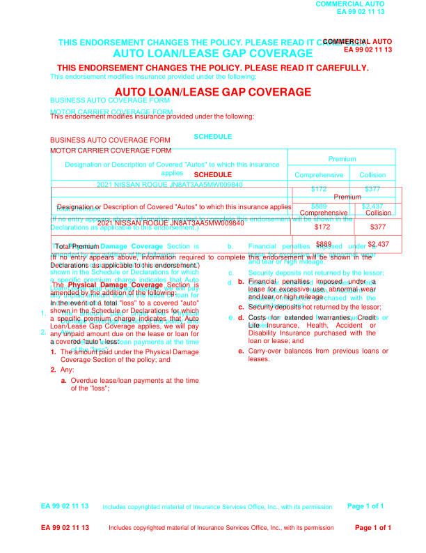

GhostDraft (TST) — page 2

HTML designer — page 2
no page
Overlay
page count differs
EA9902_1113: MATCH score 100.0% pages golden 1 html 1 (pages with text) words golden 254 html 254 missing 0 extra 0 golden C:\src\fact-docgen\src\Moe.Commercial.Documents.Generation.Integration.Tests\TestData\Snapshots\EA9902_1113\GoldenSnapshot.txt template C:\src\fact-poc\output\ghostdraft\batch\EA9902-1113.json serverxml C:\src\fact-poc\output\ghostdraft\serverxml\EA9902_1113\ServerXml.xml



moved COMMERCIAL (-10.0, -54.0)pt moved AUTO (-10.6, -54.0)pt moved EA (-9.9, -54.3)pt moved 99 (-10.2, -54.3)pt moved 02 (-10.2, -54.3)pt moved 11 (-10.2, -54.3)pt moved 13 (-10.8, -54.3)pt moved THIS (+1.9, -37.1)pt moved ENDORSEMENT (+1.9, -37.1)pt moved CHANGES (+1.9, -37.1)pt moved THE (+1.9, -37.1)pt moved POLICY. (+1.9, -37.1)pt moved PLEASE (+0.5, -37.1)pt moved READ (+0.5, -37.1)pt moved IT (+0.5, -37.1)pt moved CAREFULLY. (+0.5, -37.1)pt moved AUTO (-2.2, -55.7)pt moved LOAN/LEASE (-1.2, -55.7)pt moved GAP (+0.7, -55.7)pt moved COVERAGE (+1.5, -55.7)pt moved This (+0.0, -57.7)pt moved endorsement (+0.5, -57.7)pt moved modifies (+1.0, -57.7)pt moved insurance (+1.4, -57.7)pt moved provided (+1.9, -57.7)pt moved under (+2.4, -57.7)pt moved the (+2.8, -57.7)pt moved following: (+3.4, -57.7)pt moved BUSINESS (+0.0, -57.5)pt moved AUTO (-0.6, -57.5)pt moved COVERAGE (-0.8, -57.5)pt moved FORM (-0.8, -57.5)pt moved MOTOR (+0.0, -55.1)pt moved CARRIER (+0.4, -55.1)pt moved COVERAGE (+0.9, -55.1)pt moved FORM (+1.4, -55.1)pt moved SCHEDULE (-0.3, -55.2)pt moved Premium (-7.9, -54.9)pt moved Designation (+11.4, -60.7)pt moved or (+12.1, -60.7)pt moved Description (+12.5, -60.7)pt moved of (+13.0, -60.7)pt moved Covered (+13.5, -60.7)pt moved "Autos" (+14.0, -60.7)pt moved to (+14.5, -60.7)pt moved which (+15.1, -60.7)pt moved this (+15.7, -60.7)pt moved insurance (+16.1, -60.7)pt moved applies (-156.1, -49.5)pt moved Comprehensive (-7.5, -55.0)pt moved Collision (-8.8, -55.0)pt moved 2021 (-1.1, -55.4)pt moved NISSAN (-1.1, -55.4)pt moved ROGUE (-1.1, -55.4)pt moved JN8AT3AA5MW009840 (-1.2, -55.4)pt moved $172 (-5.0, -55.1)pt moved $377 (-7.8, -55.1)pt moved $889 (-6.9, -55.0)pt moved $2,437 (-8.4, -55.0)pt moved (If (+0.0, -55.1)pt moved no (-2.0, -55.1)pt moved entry (-3.8, -55.1)pt moved appears (-5.4, -55.1)pt moved above, (-7.3, -55.1)pt moved information (-9.2, -55.1)pt moved required (-11.1, -55.1)pt moved to (-13.0, -55.1)pt moved complete (-14.8, -55.1)pt moved this (-16.7, -55.1)pt moved endorsement (-18.7, -55.1)pt moved will (-20.6, -55.1)pt moved be (-22.5, -55.1)pt moved shown (-24.3, -55.1)pt moved in (-26.1, -55.1)pt moved the (-27.8, -55.1)pt moved Declarations (+0.0, -54.6)pt moved as (-1.9, -54.6)pt moved applicable (-1.9, -54.6)pt moved to (-1.9, -54.6)pt moved this (-1.9, -54.6)pt moved endorsement.) (-1.9, -54.6)pt moved b. (-14.9, -50.6)pt moved Financial (+0.1, -50.6)pt moved penalties (+0.1, -50.6)pt moved imposed (+0.1, -50.6)pt moved under (+0.1, -50.6)pt moved a (+0.1, -50.6)pt moved amended (+0.0, -55.5)pt moved by (-0.0, -55.5)pt moved the (-0.0, -55.5)pt moved addition (-0.0, -55.5)pt moved of (-0.0, -55.5)pt moved the (-0.0, -55.5)pt moved following: (-0.0, -55.5)pt moved and (+0.0, -50.9)pt moved tear (+0.0, -50.9)pt moved or (+0.0, -50.9)pt moved high (+0.0, -50.9)pt moved mileage. (+0.1, -50.9)pt moved In (+0.0, -55.4)pt moved the (+0.0, -55.4)pt moved event (+0.1, -55.4)pt moved of (+0.1, -55.4)pt moved a (+0.1, -55.4)pt moved total (+0.1, -55.4)pt moved "loss" (+0.0, -55.4)pt moved to (+0.1, -55.4)pt moved a (+0.1, -55.4)pt moved covered (+0.1, -55.4)pt moved "auto" (+0.1, -55.4)pt moved c. (-14.2, -49.8)pt moved Security (+0.0, -49.7)pt moved deposits (+0.7, -49.7)pt moved not (+1.2, -49.7)pt moved returned (+1.7, -49.7)pt moved by (+2.2, -49.7)pt moved the (+3.0, -49.7)pt moved lessor; (+3.4, -49.7)pt moved a (+0.0, -55.7)pt moved specific (+0.1, -55.7)pt moved premium (+0.2, -55.7)pt moved charge (+0.3, -55.7)pt moved indicates (+0.4, -55.7)pt moved that (+0.6, -55.7)pt moved Auto (+0.1, -55.7)pt moved d. (-14.9, -50.9)pt moved Costs (+0.1, -50.9)pt moved for (+0.1, -50.9)pt moved extended (+0.1, -50.9)pt moved warranties, (+0.1, -50.9)pt moved Credit (+0.0, -50.9)pt moved Loan/Lease (+0.0, -55.5)pt moved Gap (-0.0, -55.5)pt moved Coverage (-0.1, -55.5)pt moved applies, (-0.2, -55.5)pt moved we (-0.1, -55.5)pt moved will (-0.0, -55.5)pt moved pay (+0.0, -55.5)pt moved Life (+0.0, -50.6)pt moved Insurance, (+0.2, -50.6)pt moved Health, (+0.3, -50.6)pt moved Accident (-0.1, -50.6)pt moved or (+0.0, -50.6)pt moved any (+0.0, -56.0)pt moved unpaid (+0.3, -56.0)pt moved amount (+0.3, -56.0)pt moved due (+0.4, -56.0)pt moved on (+0.4, -56.0)pt moved the (+0.4, -56.0)pt moved lease (+0.5, -56.0)pt moved or (+0.5, -56.0)pt moved loan (+0.3, -56.0)pt moved for (+0.1, -56.0)pt moved a (+0.0, -55.7)pt moved covered (-0.0, -55.7)pt moved "auto", (-0.0, -55.7)pt moved less: (-0.0, -55.7)pt moved loan (+0.0, -51.0)pt moved or (+0.0, -51.0)pt moved lease; (+0.0, -51.0)pt moved and (+0.0, -51.0)pt moved 1. (-14.3, -55.7)pt moved The (+0.1, -55.7)pt moved amount (+8.1, -55.7)pt moved paid (+16.1, -55.7)pt moved under (+24.2, -55.7)pt moved the (+32.2, -55.7)pt moved Physical (+40.2, -55.7)pt moved e. (-14.2, -49.1)pt moved Carry-over (+0.0, -49.1)pt moved balances (+0.0, -49.1)pt moved from (+0.2, -49.1)pt moved previous (+0.0, -49.1)pt moved loans (+0.0, -49.1)pt moved or (+0.0, -49.1)pt moved Coverage (+40.6, -56.2)pt moved Section (+40.6, -56.2)pt moved of (+40.5, -56.2)pt moved the (+40.5, -56.2)pt moved policy; (+40.5, -56.2)pt moved and (+40.5, -56.2)pt moved leases. (+0.0, -49.3)pt moved 2. (-14.2, -55.1)pt moved Any: (-0.0, -55.1)pt moved a. (-14.3, -56.2)pt moved Overdue (+0.1, -56.2)pt moved lease/loan (+0.1, -56.2)pt moved payments (+0.1, -56.2)pt moved at (+0.1, -56.2)pt moved the (+0.0, -56.2)pt moved time (+0.0, -56.2)pt moved of (+0.0, -56.0)pt moved the (+0.0, -56.0)pt moved "loss"; (+0.0, -56.0)pt moved EA (-0.0, -31.7)pt moved 99 (-0.4, -31.7)pt moved 02 (-0.4, -31.7)pt moved 11 (-0.4, -31.7)pt moved 13 (-0.9, -31.7)pt moved Includes (-8.8, -30.8)pt moved copyrighted (-8.1, -30.8)pt moved material (-7.1, -30.8)pt moved of (-6.4, -30.8)pt moved Insurance (-6.2, -30.8)pt moved Services (-5.3, -30.8)pt moved Office, (-4.6, -30.8)pt moved Inc., (-4.2, -30.8)pt moved with (-3.7, -30.8)pt moved its (-3.4, -30.8)pt moved permission (-3.1, -30.8)pt moved Page (-10.8, -31.7)pt moved 1 (-10.7, -31.7)pt moved of (-10.8, -31.7)pt moved 1 (-10.8, -31.7)pt size b. 9.9 -> 10.0pt size c. 9.9 -> 10.0pt size d. 9.9 -> 10.0pt size 1. 9.9 -> 10.0pt size e. 9.9 -> 11.0pt size 2. 9.9 -> 10.0pt size a. 9.9 -> 10.0pt missing h rule at 268.2 (73.7-577.2) missing h rule at 291.5 (420.3-577.2) missing h rule at 313.9 (73.7-508.8) missing h rule at 313.9 (510.4-577.2) missing h rule at 337.4 (73.7-508.8) missing h rule at 337.4 (510.4-577.2) missing h rule at 363.1 (73.7-577.2) missing v rule at 73.4 (268.5-362.8) missing v rule at 417.4 (314.1-337.1) missing v rule at 420.1 (268.5-313.6) missing v rule at 420.1 (337.6-362.8) missing v rule at 509.0 (314.1-337.1) missing v rule at 510.1 (291.7-313.6) missing v rule at 510.1 (337.6-362.8) missing v rule at 577.4 (268.5-362.8) extra h rule at 213.4 (73.5-568.5) extra h rule at 236.6 (414.0-568.5) extra h rule at 258.4 (73.5-568.5) extra h rule at 282.4 (73.5-568.5) extra h rule at 307.9 (73.5-568.5) extra v rule at 73.9 (213.0-308.2) extra v rule at 413.6 (213.0-308.2) extra v rule at 502.1 (237.0-308.2) extra v rule at 568.1 (213.0-308.2)